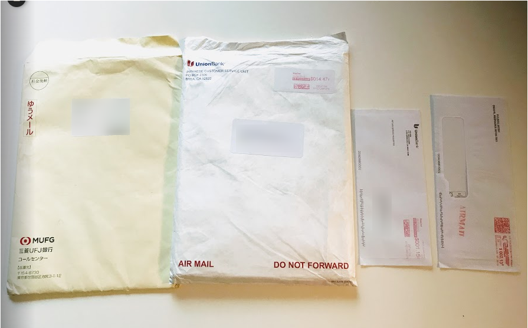
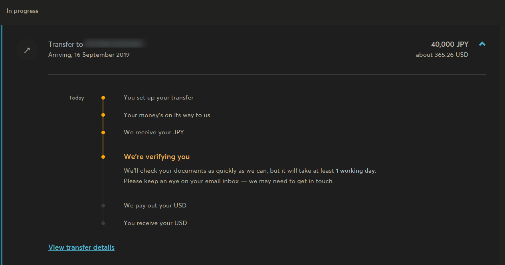

ユニオンバンクのオンラインバンキング開設手続きから、TrancferWiseで送金するまで。

必要書類がやっとそろった。今回は本当に送金した。ユニオンバンクのオンラインバンキング開設手続きから、TrancferWiseで送金するまで。
4通の書類が届きました
先日UFJ銀行から口座開設完了のお知らせが郵送されてきた際に、かなりはりきって送金しようとして ユニオンバンクへの送金。初めての海外送金。、という記事書いたんですが、送金後に着金したかどうかって、どうやってわかるの？って途中で気が付いて、ネットバンキングができるようになってからじゃないと送金後に不安になるので、必要書類が全部到着するまで落ち着こうということになりました。
あれからさらに1週間程度たちましたが、全部で4通、UFJ銀行から1通、口座開設完了のお知らせが届き、ユニオンバンクからは3通、ウェルカムキット、ATMカード、PINコードが書かれたエアメールが届きました。 ATMカードが届いて、開けて読んでみたら、
もしPINコード持ってなかったら、近くのユニオンバンクいって聞いてみてよ
的なことがもちろん英語で書いてあって、え、PINコードってなに、申し込みの時に書いた覚えないし、持ってないよってなってちょっと焦りましたが、ネットで調べるともう一通、PINコードが書かれたエアメールが時間差で届くよって書いてる人がいて、ちょっと不安になりながら待ってると、2-3日で届きました。

申し込みしてから、ちょうど1か月ちょっとかかりました。
オンラインバンキングの登録をする
-
Union Bank - Enjoy Secure Access To Your Accounts -- On Your Timeにアクセス
-
一番上の【Debit/ATM PIN】をクリック
- カードナンバーの下8桁入力
- 4桁のPINコード入力
- 郵便番号入力
- 誕生日入力
- 下記の質問リストから3つ選んで答えを設定します。
Select Your Security Questions
Choose 3 security questions to which only you know the answer:
In which city was your first elementary school?
Who is your favorite person from history?
What is your grandfather's middle name (your mother's father)?
What was the TV series you liked most in the 1990s?
What is the first name of the eldest of your cousins (from your mother's side)?
What is the first name of your mother's youngest sibling?
What is your grandmother's middle name (your mother's mother)?
What is your grandmother's middle name (your father's mother)?
What was the family name of your nearest neighbor in 2000?
Which sports team did you like most as a child?
What is the first name of your grandfather (your father's father)?
What is the first name of your grandfather (your mother's father)?
What is the name of the college your spouse attended?
What is the first name of your grandmother (your father's mother)?
How old was your father when you were born?
In which city did you get engaged?
What is the first name of your closest childhood friend?
Which state did you first visit (outside the one you were born in)?
What time of day was your oldest child born? (rounded to the closest hour, for example - 08)
What was the last name of your first grade teacher?
On what street did you first live after your parents' home?
What is your grandfather's profession?
What is the middle name of your youngest sibling?
What college was your college rival (abbr: NYU, UCF)?
What was your favorite restaurant in college?
What is the middle name of your eldest sibling?
What is the name of the hospital your oldest child was born in?
What was the last name of your favorite college professor?
What was the first name of your first grade teacher?
What is the last name of your most memorable childhood neighbors?
What was your favorite place to visit as a child?
What is the first name of your spouse's youngest sibling?
What is the first name of your first crush?
Which city were you in at the turn of the millennium?
What is the name of the hospital in which you were born?
What was the name of your first pet?
What is the street name where you lived when you were 10 years old?
In which city did your parents get married?
What is the first name of your spouse's mother?
What is the first name of the person you went to your prom with?
In which city was your grandmother born (mother's mother)?
In which city was your grandmother born (father's mother)?
What was your favorite movie as a child?
In which city was your grandfather born (father's father)?
What is the name of your most memorable childhood babysitter\caregiver?
- ユーザーIDとパスワード、メールアドレスを入力
- 先ほど設定した質問の一つにこたえる。
- 追加で電話番号を入力するページが出てきて、登録しようとしたけれど、なぜかできなかったので飛ばしたが問題なく登録できた模様。
何もせずに3分経つと、セキュリティー上の理由？からかタイムアウトするか？みたいなメッセージが出てきて、焦ってしまう💦ので3つの質問はあらかじめだいたい決めておいた方が良いでしょう。
ログインしたら Accounts ＞ Statements のページで Online statement only を選んでおきました。
講座の種類
前後しましたが大事な情報なのでリンクを貼っておきます
私はセービングス・アカウントのみ開設しましたが、UFJ銀行から口座開設完了のお知らせに書いてある日にちから60日以内に入金をしないと口座が閉鎖されてしまいます。 300ドル以上の残高を保つかまたは25ドル以上の入金がないと口座維持手数料が4ドル/月かかってしまう。
ということなので初回300ドル程度になるように送金してみようかと思います。
国内ATMから出金はできるようなので、入金はできないのか？と考えたのですが、 ユニオンバンクのATM以外の提携ATMからだと、出金と残高照会のみのようですね。
TransferWise
やっとここから前回フライングしそうになった送金です。
途中Routing numberというのが出てきますが銀行番号のようなもので銀行によって決まっているようです。
-
Routing number (ABA Transit number) - TransferWise ユニオンバンクは122000496だそうです。下記ページをご確認ください。
口座番号は間違えてカード番号を入れないように気を付けます。
免許証やパスポートなどの写真付き身分証明書とマイナンバーカード（紙のやつで大丈夫）が必要です。あらかじめ免許証なら裏も含めて撮影しておいた方が良いと思います。
指示通りに入力していけば問題なく進むと思います。 入力が終わると、振込先情報（東京三菱UFJ銀行のトランスファーワイズの口座）が表示されますので、そこに振込をします。 私はUFJの口座から振り込んだので手数料は無料で済みました。
現在は In progress となっており、着金予定は 16 September 2019 となっています。
クリックして詳細を表示したら、お金受け取ったよ、いろいろチェックしています。1日程度かかるよ、連絡事項はメールするから、見といてねって感じのことが書いてありましたたぶん。全然違ったらすいません

2回目以降の送金は郵送で住所確認が必要とか書いてあったような気がします。それもしばらく時間かかりそうだし、送金完了までしばらく待ちたいと思います。